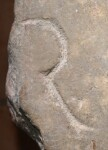

R - type1
- Script
- Latin
- Grapheme
- R
- Allograph
- type1
- Characteristic form:
-
- bowl is open
- downstroke is straight
- right-bar is diagonal
Typology
More specific types
type1.1, type1.2Exemplar

Origin: Thermae Himeraeae
between AD 1 and AD 100